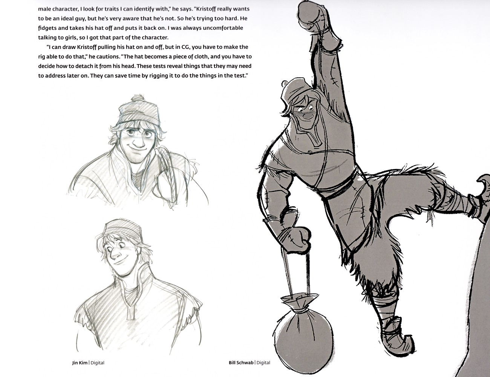

🪓 克里斯托夫 · 人物
人物档案
基本信息、角色定位、琐事幕后
身材高大魁梧，宽肩厚背，那是常年凿冰、扛运冰块练就的力量感；一头凌乱的浅棕色短发，常扣着一顶深色毛皮帽。F1 里他穿深棕与墨绿相间的厚重冬装，外罩皮革护肩与宽腰带，脚蹬厚靴，那把采冰斧几乎从不离手——既是谋生的工具，也是…

克里斯托夫 · 角色设定（二）克里斯托夫的表情与姿态研究：木讷少言却眼神温和，'underplayed' 的拘谨表演风格与安娜的热烈形成对照。 | 来源：官方设定集《The Art of Frozen》
🎨 造型速写身材高大魁梧，宽肩厚背，那是常年凿冰、扛运冰块练就的力量感；一头凌乱的浅棕色短发，常扣着一顶深色毛皮帽。F1 里他穿深棕与墨绿相间的厚重冬装，外罩皮革护肩与宽腰带，脚蹬厚靴，那把采冰斧几乎从不离手——既是谋生的工具，也是他仅有的「家当」。F2 换上更利落轻便的探险装，色调转为沉稳的深蓝与棕，少了采冰人的笨重，多了走向未知的干练。他的表情多数时候木讷而严肃，唯独那双眼睛始终是温和的。
图库暂未收录该角色独立剧照，此处以文字还原其外形与装扮（依据电影正典与官方设定集） 🎭 角色定位
克里斯托夫是《冰雪奇缘》对「王子」刻板印象的解构。传统童话中，拯救公主的是英俊王子；但《冰雪奇缘》中，真正的英雄是一个「非王子」的采冰人。他没有皇室血统，没有魔法，只有一双粗糙的手和一颗真诚的心。设定集明确指出：克里斯托夫的角色定位是「安娜的搭档与英雄（非王子）」——他与安娜是平等的伙伴关系，而非「王子拯救公主」的上下级关系。
在F2中，克里斯托夫的定位进一步丰富为「笨拙的求婚者」。他计划向安娜求婚，却总被森林冒险打断；在《Lost in the Woods》中以80年代摇滚风格唱出对安娜的依赖与迷失。这让他从「英雄」变成了「有血有肉的普通人」——他也会焦虑、也会迷失、也会在感情中笨拙。
🔍 琐事与幕后
- 克里斯托夫的姓氏Bjorgman来自挪威语，意为「冰山守护者」
- 他的服装灵感来自北极原住民萨米人（Sami）的传统服饰
- 动画上采用「underplayed」风格——动作高效、表情克制，与安娜的夸张形成对比
- 紧张时会反复摘戴帽子，这是他不善表达情感的招牌动作
- 常替斯文用低沉「驯鹿音」配音，体现独处太久、习惯自言自语的特质
- F1结尾被安娜任命为「official Arendelle ice master and deliverer」（阿伦黛尔官方采冰大师兼送货员）
📌 本页要点
你正在阅读《克里斯托夫》卷的「人物档案」。本页由电影正典、官方设定集与官方小说综合梳理，可作为该主题的速查入口；右侧目录可快速跳转到本页各小节。